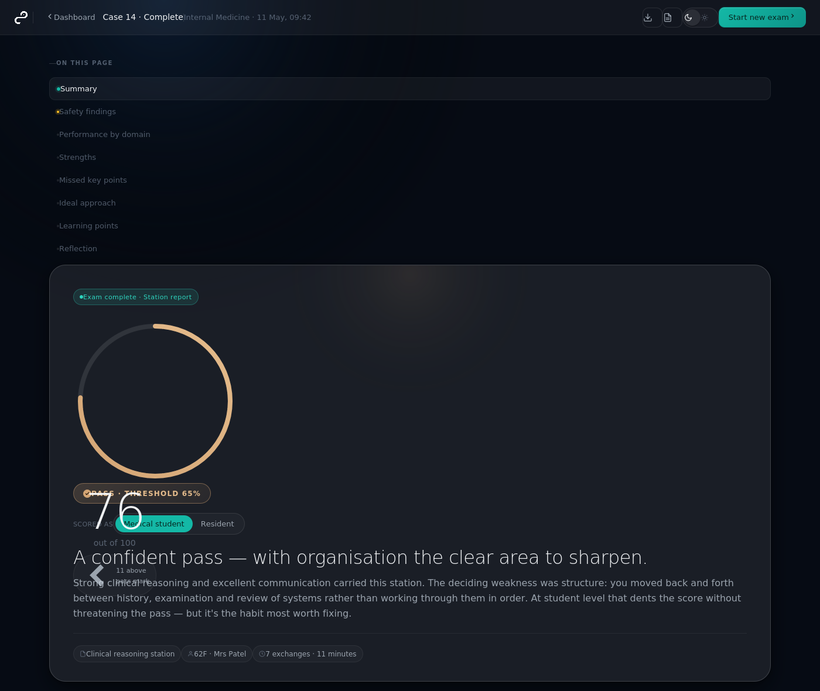

PLX-PMR-AS-001 · Ankylosing Spondylitis — Breaking Bad News & Joint-Protection Counselling#
Master station · V3 (v2.0). A multi-skill, AI-modulated, concealed-construct station built on the Master Station Blueprint. Specialty: PM&R / Rheumatology. Type: breaking bad news + chronic-disease counselling + shared planning. Default level: senior resident (Advanced / concealed). Modes: Exam, Tutor.
Requirements at a glance#
- Total marks 42 (senior, including the construct-recognition item). Pass = 27 / 42 (≈65%) and no critical-fail item scored 0.
- Critical-fail items (each must score ≥1): #5 deliver the news clearly and plainly · #8 explain spinal fragility and why contact sport must stop · #15 safety-net for new neurological symptoms or new spinal trauma.
- On the concealed tiers the candidate must recognise, unprompted (#3), that this is breaking bad news — not a routine history.
- Contact sport, spinal manipulation, percussion therapy and cervical traction are absolutely contraindicated and must be conveyed; realistic safe alternatives must be offered.
- Plain-language communication is scored (#13); jargon that loses the patient is a communication failure even if the content is correct.
S0 · Identity & metadata#
| Field | Value |
|---|---|
| Station ID | PLX-PMR-AS-001 (Master v2.0) |
| Specialty | Physical Medicine & Rehabilitation |
| Condition | Ankylosing spondylitis (axial spondyloarthritis) |
| Type | Multi-skill: breaking bad news + chronic-disease counselling + shared planning |
| Candidate levels | Basic (explicit) · Intermediate · Advanced (concealed) |
| Default level | Senior resident (Advanced / concealed) |
| Time | 12 min (+2 reading) senior; 10 min lower tiers |
| Total marks | 42 (senior); 40 (Basic — construct item omitted) |
| Pass | 27 / 42 (≈65%) + no critical-fail item = 0 |
Construct statement: assesses the candidate's ability to recognise (when concealed) and then deliver life-altering news integrated with accurate chronic-disease counselling, realistic alternatives, jargon-free communication and safety advice — testing judgement, communication and applied knowledge together.
S1 · Candidate instructions (tiered)#
Shared scenario (all tiers): a physiatrist in the outpatient PM&R clinic; the patient is Mr. Omar K., a 22-year-old competitive rugby player recently diagnosed with ankylosing spondylitis after months of inflammatory back pain, a positive HLA-B27, and imaging showing early syndesmophytes and reduced spinal bone density. He has come to discuss "what this means for my rugby season." The candidate sees only the prompt for the active tier:
- Basic (explicit): "Establish his understanding, explain that he should stop contact sport and why, counsel on self-management, and agree a plan."
- Intermediate: "Counsel this patient about his diagnosis." (The candidate must decide what counselling involves — including the news about sport.)
- Advanced (concealed): "Take a focused history and answer the patient's questions." (The candidate must discover that bad news + counselling + alternatives + safety advice are required.)
S1B · Concealed construct (hidden in Exam mode)#
What the candidate must recognise without being told: (1) this is not a routine history — the diagnosis carries life-altering news; (2) bad news must be delivered with structure and empathy before facts; (3) the patient needs AS self-management and joint/spine-protection counselling; (4) realistic safe alternatives must be offered, not just prohibition; (5) spinal-fragility safety advice and safety-netting are essential.
S2 · Simulated patient script#
Opening: "Doc, the rheumatologist said I've got this ankylosing spondylitis thing. I just need to know — when can I get back on the pitch? Season starts in six weeks and the team's counting on me." Omar is the club's star flanker; rugby is his identity. Initially upbeat, assumes a minor setback. Reveals — only if asked — months of morning-worse back pain better with movement, neck/hip stiffness, several knocks and one "stinger" this season; thinks AS is "just a bad back"; hidden fears of losing his team place and "being treated like an invalid"; wants a return-to-play timeline. If news is delivered bluntly or rushed, he becomes tearful or angry (scaled by tier).
S3 · Locked clinical content (AI must not alter)#
Disease: AS is a chronic inflammatory arthritis of the spine and sacroiliac joints — lifelong but manageable; features include inflammatory back pain, spinal stiffness, progressive deformity, reduced chest expansion, peripheral (esp. hip) involvement; untreated posture drifts to loss of lumbar lordosis, increased thoracic kyphosis, forward shift of the centre of mass.
Spine fragility & safety (SAFETY-CRITICAL): the AS spine is often fragile/osteoporotic; minor trauma can cause fracture or dislocation with cord compression. Avoid contact sport (rugby), spinal manipulation, contact/percussion therapy, and cervical traction. This is the core bad-news / safety content.
Management & joint-protection: anti-inflammatories + modalities (heat, hydrotherapy); warm-up before exercise; targeted stretches (suboccipital, pectorals, hamstrings, hip flexors, rotators); spinal-extension ROM; strengthen back extensors, shoulder retractors, hip extensors, postural muscles; safe aerobic alternatives — swimming, aquatic therapy, upright stationary cycling, brisk walking; daily deep-breathing; posture self-checks (occiput-to-wall, height), firm mattress, small pillow, daily prone lying 10–15 min; respect-pain joint-protection principles.
S4 · Mark scheme (locked) — domains A–E#
Each item scored 0 / 1 / 2. Critical-fail items must score ≥1. Item 3 (construct recognition) is scored on concealed tiers only.
| # | Item | Domain |
|---|---|---|
| 1 | Introduces self, builds rapport, confirms identity & agenda | A — Setup & construct recognition |
| 2 | Elicits what the patient already knows about AS | A |
| 3 | Recognises unprompted that the encounter requires breaking bad news, and pivots (concealed tiers only) | A |
| 4 | Fires a warning shot before the news | B — Breaking bad news (SPIKES) |
| 5 | Delivers the news clearly, plainly, at appropriate pace · CRITICAL | B |
| 6 | Pauses, allows silence, responds to emotion empathically | B |
| 7 | Explains AS accurately as lifelong but manageable | C — Disease & safety knowledge |
| 8 | Explains spinal fragility and why contact sport must be avoided · CRITICAL | C |
| 9 | Explains aims of management (pain, posture/mobility, respiratory) | C |
| 10 | Counsels on exercise/posture programme and joint-protection | D — Counselling & alternatives |
| 11 | Offers realistic safe alternatives (swimming, cycling, walking, aquatic) | D |
| 12 | Addresses identity/loss; supports adjustment to stopping rugby | D |
| 13 | Avoids jargon; explains plainly; checks understanding | E — Communication, integration & safety-netting |
| 14 | Shared decision-making; agrees plan; arranges MDT/follow-up | E |
| 15 | Safety-nets: return if new neurological symptoms or significant trauma · CRITICAL | E |
S5 · Difficulty & concealment (the AI Dial)#
The AI varies presentation only — never the facts (S3) or rubric (S4).
| Lever | Basic | Intermediate | Advanced |
|---|---|---|---|
| Task statement | Explicit 4-step task | "Counsel this patient" | "Take a history & answer questions" — discover the task |
| Patient affect | Calm, accepts easily | Mildly anxious | Denial / anger / tears; resists |
| Cue explicitness | Volunteers concerns | Reveals if invited | Hides identity/loss; emerges only if explored well |
| Follow-ups | Simple, factual | Factual + emotional | Confrontational, prognostic |
| Construct item | Omitted (total 40) | Scored | Scored |
Sample Advanced follow-ups: "You're telling me my life is over." · "One more season won't kill me, right?" · "Am I going to end up in a wheelchair?" · "Why should I listen to you over my coach?"
S6 · Bridge trigger map#
A bridge fires when a domain subtotal < 50%, any critical-fail item = 0, or (concealed tiers) the construct item = 0. After a drill, the candidate returns on a confidence path that does not immediately re-test the failed skill in isolation.
| Trigger | Routed drill | Return path |
|---|---|---|
| Construct not recognised (item 3 = 0) | clinical-reasoning / prioritisation drill | Basic full station |
| Bad-news delivery (Domain B < 50% or item 5 = 0) | SPIKES-only delivery drill | Intermediate full station |
| Emotion handling (item 6 = 0) | responding-to-anger/denial micro-drill | Basic full station |
| Disease knowledge (Domain C < 50%) | AS pathophysiology drill | Basic full station |
| Spinal safety (item 8 = 0 · CRITICAL) | AS spinal-fragility safety drill (highest priority) | re-test safety item at next tier up |
| Management (Domain D < 50%) | exercise, posture & joint-protection drill | Basic full station |
| Jargon (item 13 = 0) | plain-language communication drill | Basic full station |
| Shared planning / safety-net (Domain E < 50% or item 15 = 0) | ICE + shared-plan + safety-net drill | Intermediate full station |
S8 · Tutor mode#
In Exam mode the AI stays silent and reveals nothing. In Tutor mode it coaches Socratically during the encounter at natural pauses only ("What do you think this young man most needs from you right now?" · "He looked confused when you said that — how else could you put it?") — never mid-sentence, never the answer outright. After the encounter it is directive: reveal the concealed construct, map performance to specific mark-scheme items, explain any bridge fired, and give one or two concrete improvements.
S9 · Plain-language & jargon control#
If an unexplained term is used, the patient responds in character with confusion ("Sorry doc — what do you mean by that?"). Item 13 scores plain-language use; repeated unexplained jargon → item 13 = 0 → fires the plain-language bridge.
| Term | Plain-language version |
|---|---|
| Ankylosing spondylitis / spondyloarthritis | a long-term arthritis that affects the spine |
| Syndesmophytes / fusion / ankylosis | the spine bones gradually stiffening and joining together |
| Osteoporotic / reduced bone density | the bones being thinner and more fragile than normal |
| Kyphosis / lordosis | a forward-stooped posture / the natural curve of the back |
| HLA-B27 | a gene linked to this condition (found on a blood test) |
| Enthesitis | where tendons attach to bone, which can become sore |
| Cord compression | pressure on the spinal cord, which can damage the nerves |
| MDT | the team of different specialists who'll look after you |